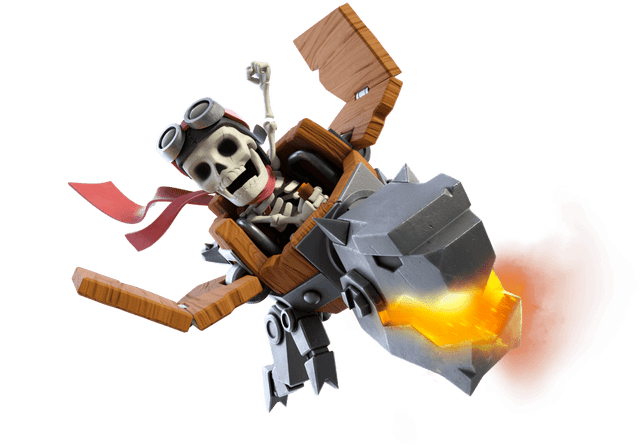

Dragon Rider

Overview About Dragon Rider
- The most recent wall breaker variant and the first dragon-wall breaker variant in the game. The dragon rider is a defense-targeting air unit that is tanky, and devastating when in a large quantity.
- The Dragon Rider is unlocked in town hall 13, meaning that you can get them in endgame content. Similar to the balloon, they deal damage upon death
- Unlike the balloon, they are fast, and also a ranged unit. They can connect to a defense easily rather than a balloon.
- However, they aren't the best clan castle troops. Because they only target one at a time, it is harder to kill a mass amount of units unlike the balloon, who has a small but handy splash radius.
Facts:
- The Dragon Rider is the most recent troop in the game (Super troops not included), And was made in the Spring update of 2021.
- When the dragon rider dies, similar to the balloon, they crash down to the surface (But the dragon rider crashes head first, making the death animation alot more interesting).
- They are actually the strongest troop in the whole wall breaker variants (in terms of dps and hitpoints, since the balloon still reigns supreme in the damage front), and also the strongest troop in the dragon variants (in terms of hitpoints and damage). Talk about a strong endgame troop!
- Similar to the wall breaker, and the balloon, the Dragon Rider attacks the nearest building/troop/hero after all the defenses are gone.
- With the headhunter, yeti, PEKKA, and the dragon, they are the only troops who have a visual difference/improvement on every level.
- The Dragon Rider is one of the troops that has the least amount of levels, together with the yeti and the headhunter.
Statistics:
| Level |
Hitpoints |
Damage per attack |
Damage per second |
Death Damage |
| 1 |
4100 |
408 |
370 |
700 |
| 2 |
4400 |
444 |
400 |
800 |
| 3 |
4700 |
144 |
480 |
400 |